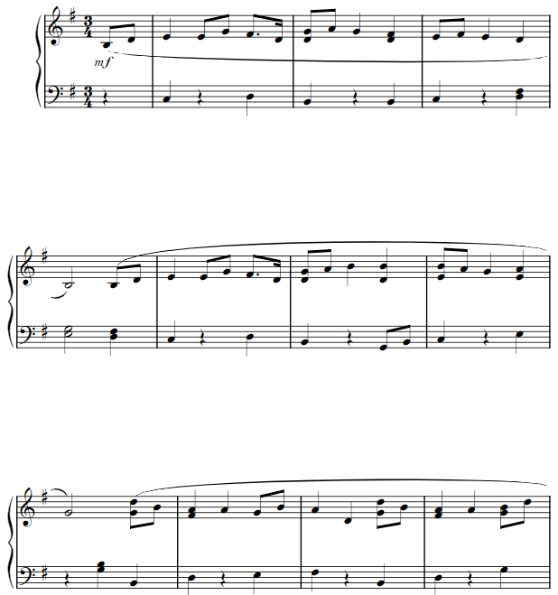

Week 8: Electronic Output Devices
This week's assignment was to choose an output device and program a microcontroller to operate it.
First I played around with some of the output devices: servo motor, dc motor, LED, and buzzer. Then afterwards I made a little music box type thing, where if you press a button, a song would play with a color sequence to go with it.
Servo Motor
First off I started with the servo tutorial provided on the class website. First I learned how to build and code a basic servo layout. And then I used a potentiometer to control the servo.
For the basic servo layout, it is just plugging power and ground into the servo and plugging in one of the digital pins to control the movement. For Arduino coding the servo, you have to include the Arduino Servo library.
Materials needed are:
- Servo Motor
- ItsyBitsy
- Breadboard
- Wires
Click Here for Code to the servo with potentiometer

DC Motor
Next I did the motor tutorial that was provided on the class website. I did the motor setup with a FET (Field Effect Transistor).
For the basic motor layout, it is just plugging in a 9V power supply into power and ground on the breadboard; connect diode right after that to go to the drain leg of the FET. After the power side of the diode, you add the positive end of the motor. In line with the drain leg fo the FET and negative end of the diode you add the negative end of the motor. You attach the gate leg of the FET to a digital pin. And then you add the source leg of the FET to ground and you add the itsy bitsy to ground.
There is not a special library needed for the code.
Materials needed are:
- DC Motor
- Breadboard
- Itsy Bitsy
- 9V Power Supply
- FET, in this case a IRLD024, that can conduct up to 2.5 Amps
- Wires
A little music player
For this week's weekly project, I combined using a buzzer and a RGB LED. First off, I had to learn how to use a buzzer. It was relatively simple to set up and code. It was just a little annoying to have it start screaming like a fire alarm whenever I plugged it into my computer. So, I decided to add a button to the circuit to give me control of when the buzzer is supposed to go off.
For the basic buzzer setup with just the buzzer, it was just plugging the negative end of the buzzer into ground, plugging the positive end into a digital pin.
To add a button, you had to add it before the buzzer. The button has to get a certain input (such as closing) to then tell the buzzer to play. So for this you add power straight to the button and add the negative side of the button to a digital pin and also run it to ground with a resistor. Then add the buzzer after that; to a different digital pin and to ground.
To get the buzzer to play certain notes, you have to code certain frequencies into the tone function in Arduino. To get desired note frequencies I looked up a table on the internet and enter in some notes and played around with note length. To get a desired note length, you change the values of the delay inbetween each note and change the duration of the frequency (within the tone code) accordingly. After this I decided to code the Jupiter, the Bringer of Jollity's main theme by Gustav Holst. Why I chose this piece was because Jupiter is my favorite planet and Jupiter is one of my favorite pieces in The Planets Suite. To get the notes and durations, I looked up some sheet music and entered note frequencies and did some transposing. So, first I started off with 4 bars from the piece shown to the right.

Part of Jupiter, the Bringer of Jollity's main theme
Next I finished the rest of the main theme of the suite. And then I optimized the code because it was starting to get a little long with the repeated tone and delay functions. I made a function named setTone with took the inputs of note, duration, and amount.
For the notes, before the whole setup of the code I initialized all the notes by letters and gave them their respective frequencies. Duration was the length of the sustain which in almost every note's case was 500, unless it was a half note. And then amount corresponded to the length of the delay, which dictated what type of note it was. For the eight note, I decided to go with the value of 300. So to get a quarter note you multiply by 2 because there are 2 eight notes in a quarter note, and then do the same (multiple by 2) to get a half note (2 quarter notes in a half note). So eight note was 300, quarter note was 600, and half note was 1200. For the sixteenth note, you divide the eight note value by 2, because there are 2 sixteenth notes in an eight note. So sixteenth note value was 150. And for dotted notes, specifically the dotted eighth, you half the original value of the note that is dotted and add that to the original value. So for dotted eight note, you half it and get 150, and then add that to the original value, so 450. A dotted eight note is 450.
Click Here final Jupiter theme code (it is pretty long)After that I decided that I wanted to add an RGB LED to interact with music that was being played. I wanted the colors to switch everytime a different note was played. So you set up the RGB LED on the breadboard with 3 resistors and 3 wires going from the RGB legs to 3 different digital pins, and the last leg going to ground. Now in my setTone function, I put in an if/else if/else statement to check what note is going to be played and then to use a setColor function to give values to the RGB LED depending on what note is going to be played.
Click Here final setTone function code
After that I add light to the rest of the song. I also decided to add another song via another button. I added the Kylo Ren theme, because he is my favorite character in Star Wars. Using the same method as above to get the notes and I used sheet music to put down the note names and values. I added another button in parallel on the circuit board. And that is it for this week's project.
Click Here final code (it is very long)